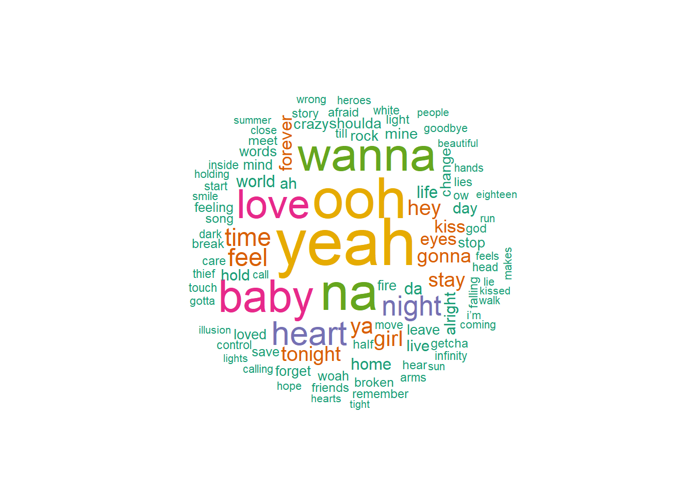
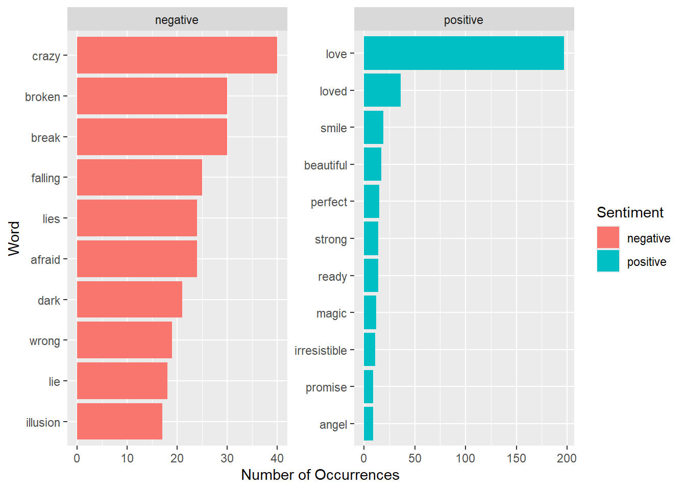
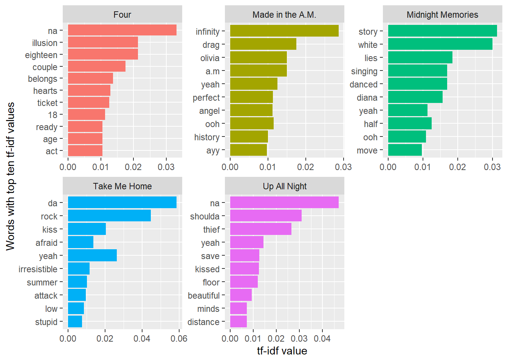
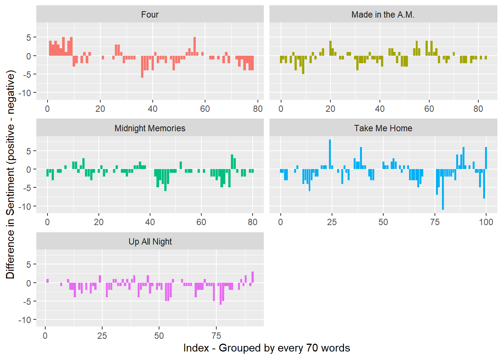

── Attaching core tidyverse packages ──────────────────────── tidyverse 2.0.0 ──
✔ dplyr 1.2.1 ✔ readr 2.2.0
✔ forcats 1.0.1 ✔ stringr 1.6.0
✔ ggplot2 4.0.3 ✔ tibble 3.3.1
✔ lubridate 1.9.5 ✔ tidyr 1.3.2
✔ purrr 1.2.2
── Conflicts ────────────────────────────────────────── tidyverse_conflicts() ──
✖ dplyr::filter() masks stats::filter()
✖ dplyr::lag() masks stats::lag()
ℹ Use the conflicted package (<http://conflicted.r-lib.org/>) to force all conflicts to become errors
Loading required package: RColorBrewer
Rows: 95 Columns: 7
── Column specification ────────────────────────────────────────────────────────
Delimiter: ","
chr (5): Song, Artist(s), Writer(s), Album(s), Lyrics
dbl (2): S.No., Year
ℹ Use `spec()` to retrieve the full column specification for this data.
ℹ Specify the column types or set `show_col_types = FALSE` to quiet this message.Mini Project 1 - Claire Faulkner
#Introduction One Direction was a band that formed in 2010 on the show The X Factor and released and performed music together until 2016. Memebers included Niall Horan, Zayn Malik, Liam Payne, Harry Styles, and Louis Tomlinson. During their time together, One Direction released five studio albums, “Up All Night”, “Take Me Home”, “Midnight Memories”, “Four”, and “Made in the A.M.”, in chronological order of release. These five albums are the focus of my mini project. One Direction sold over 70 million records globally and made history as the first group to have their first four studio albums debut at number one on the U.S. Billboard 200 chart. Their most popular song by sales, “What Makes You Beautiful”, has over one billion views on YouTube, and their highest-streamed song on Spotify, “Night Changes”, has over 2.7 billion streams. Even a decade later, One Direction still has over 45 million monthly listeners on Spotify. Although their time together was not long, One Direction had a great cultural and musical impact. My project will analyze lyrics from their five albums by using sentiment analysis and tf-idf analysis to gain more insight on the composition of One Direction song lyrics.
# A tibble: 175 × 2
word lexicon
<chr> <chr>
1 i snowball
2 me snowball
3 my snowball
4 myself snowball
5 we snowball
6 our snowball
7 ours snowball
8 ourselves snowball
9 you snowball
10 your snowball
11 yours snowball
12 yourself snowball
13 yourselves snowball
14 he snowball
15 him snowball
16 his snowball
17 himself snowball
18 she snowball
19 her snowball
20 hers snowball
21 herself snowball
22 it snowball
23 its snowball
24 itself snowball
25 they snowball
26 them snowball
27 their snowball
28 theirs snowball
29 themselves snowball
30 what snowball
31 which snowball
32 who snowball
33 whom snowball
34 this snowball
35 that snowball
36 these snowball
37 those snowball
38 am snowball
39 is snowball
40 are snowball
41 was snowball
42 were snowball
43 be snowball
44 been snowball
45 being snowball
46 have snowball
47 has snowball
48 had snowball
49 having snowball
50 do snowball
# ℹ 125 more rows# A tibble: 95 × 7
song_number song artist writers album year lyrics
<dbl> <chr> <chr> <chr> <chr> <dbl> <chr>
1 1 18 One Direction Ed Sheeran, O… Four 2014 " i g…
2 2 A.M. One Direction Niall Horan, … Made… 2015 " won…
3 3 Act My Age One Direction John Ryan, Ju… Four 2014 " one…
4 4 Alive One Direction Julian Bunett… Midn… 2013 " my …
5 5 Another World One Direction Achraf Jannus… Up A… 2011 " it'…
6 6 Back For You One Direction Kristoffer Fo… Take… 2012 " whe…
7 7 Best Song Ever One Direction Wayne Hector,… Midn… 2013 " may…
8 8 Better Than Words One Direction Jamie Scott, … Midn… 2013 " ooh…
9 9 C'mon, C'mon One Direction Jamie Scott, … Take… 2012 " c'm…
10 10 Change My Mind One Direction Rami Yacoub, … Take… 2012 " the…
# ℹ 85 more rowsJoining with `by = join_by(word)`
#Most Common Words in One Direction Songs The first thing I wanted to look at was the most common words (aside from stop words) across all of One Direction’s songs. To do this, I created a word cloud display that matches the size of the word with its number of occurrences across all the lyrics. From the word cloud it is shown that “na”, “ooh”, and “yeah” are some of the most common. These vocal fills are extremely common in One Direction Songs. For example, “What Makes You Beautiful” has “na” appear thirty times in a row in the song. Although they may be considered nonsense words, including these vocal fills in the word clouds provides an idea of the style of One Direction songs. Aside from that, other common words or themes seem to be those surrounding romance such as “baby”, “love”, “heart”, and “kiss”. Many of One Direction’s songs center on these themes, so the word cloud seems like a good representation of the ideas contained in One Direction songs.
Joining with `by = join_by(word)`
Joining with `by = join_by(word)`
#Most Common Words in One Direction Songs Sorted by Sentiment I next wanted to explore the most common words sorted by positive and negative sentiment by using Bing sentiments. Some of the words seen in the word cloud above such as “kiss” are not included in Bing sentiments, so they will not be included in sentiment analysis using Bing. This may have some affect on sentiment analysis for One Direction songs, because as seen in the word cloud, “kiss” is a relatively common word that usually has a positive sentiment. Turning to Figure 2, it is shown that the word “love” is by far the most common word shared between One Direction lyrics and Bing sentiment words. There are almost five times the number of occurrences of the word “love” compared to the most common negative word, “crazy”. Based off of that, it may seem that there are far more positive words in One Direction songs than negative words. This is a topic I will explore later on.
# A tibble: 1,254 × 2
word n
<chr> <int>
1 yeah 357
2 ooh 299
3 na 270
4 wanna 239
5 baby 227
6 love 197
7 heart 153
8 night 120
9 time 103
10 feel 102
# ℹ 1,244 more rowsJoining with `by = join_by(word)`
Joining with `by = join_by(word)`# A tibble: 2 × 2
sentiment n
<chr> <int>
1 negative 748
2 positive 472
#Ten Most “Important” Words in each One Direction Album Tf-idf analysis is a statistic that identifies words that are specifically important to one album in this case versus the rest of the albums. Words that are frequently contained in one album but not very common or nonexistent in other albums are given a high tf-idf value. Words with high tf-idf values are often words that are repeated often in a song and unique to that song. For example, “Olivia” is a song from the album “Made in the A.M.” and is given the third highest tf-idf value for that album. Similarly, “18” is a song from the album “Four”, and the word “eighteen” also has the third highest tf-idf value for that album. This type of analysis is insightful because goes beyond simply most common words in each album and provides an idea of the defining words of each album.

#Alt Text Figure 4 is a collection of bar charts that display the sentiment trajectory of One Direction songs across their five albums with a separate graph for each album. On the x-axis are word groups that contain 70 words each, so each unit is a group of 70 consecutive words in the album. The x-axis ranges from 0 to 100 groups of words. On the y-axis is the difference in sentiment which is calculated by subtracting the number of negative words from the number of positive words. This sentiment difference ranges from -10 to 5. As described in more detail below, the graph shows that One Direction songs tend to have more negative words than positive words because there are more bars as well as taller bars extending in the negative direction on the whole. This is a relatively consistent finding across all five albums.
#Sentiment Trajectory Across One Direction Albums As mentioned above, “love” is a common positive word in One Direction songs, far exceeding any other word in number of occurrences. Because of this, I was curious to see the breakdown of positive versus negative words in One Direction songs. To investigate this, I first made a tibble with the count of both positive and negative words. I found that there were 748 negative word occurrences and 472 positive word occurrence. This was a surprising finding to me because overall, One Direction songs seem positively leaning in my opinion. To further investigate this I created a plot that placed lyrics into groups of 70 words to explore sentiment trajectory across One Direction Albums. This plot seemed to match the positive to negative word ratio found above. Especially for the album “Up All Night”, there are very few positive bars compared to negative bars. “Take Me Home” seems to have the tallest positive and negative bars, showing large differences in word groups. Overall, this plot seems to align with the result of One Direction songs having more negative words than positive words.
#Conclusion The goal of this project was to analyze One Direction songs through methods such as sentiment analysis and tf-idf analysis. While working on the project, I found some results that were expected such as the most common words in One Direction songs that appeared in the word cloud being romantically themed words. I also found some surprising results such as the number of negative words in One Direction songs far outweighing the number of positive words. Performing text analysis in this project provided insights on the lyrics and style of One Direction that I was not previously aware of and offered a glimpse into the lyrical breakdown of a popular and influential music group.